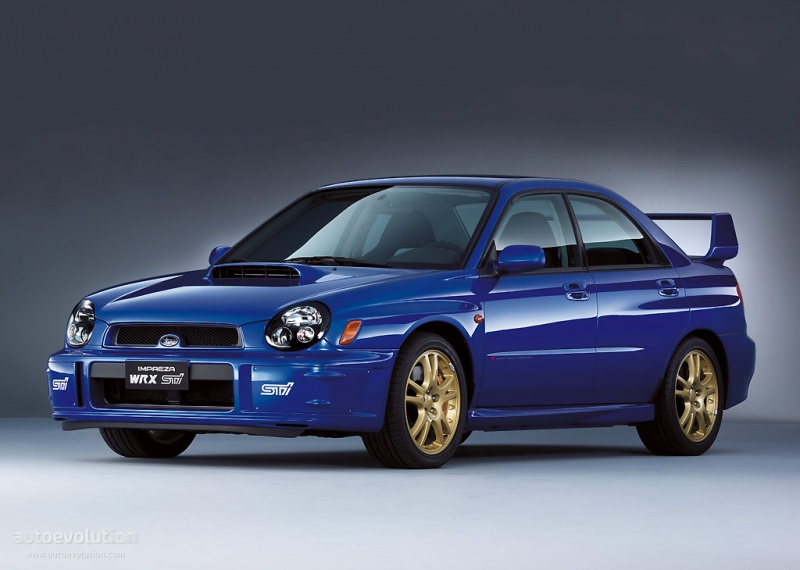

Engine: 2.0L boxer DOHC, 4 cylinder, 16 valve, Turbocharged
Horsepower/Torque: 227HP@6000rpm, Torque: ft lbs 217@4000rpm
Compression: 8.0:1, Maximum boost: 13.5 PSI
Valves: Solid lifters, valve lash shims
Fuel: 91 octane minimum, 15.9 USG
Generator, battery: 12V, 75A. Battery: manual: 48ah; automatic: 52ah
Projector Beam Fog lights: S
Body metal: 70% body sheet metal is two-sided galvanized. Aluminum-alloy hood
Engine: 2.5L boxer DOHC 4cylinder, 16 valve, Turbocharged, high-boost, IHI Brand
Horsepower/Torque: 300hp@6000 rpm, 300ft torque@4000rpm
Compression: 8.2:1, Maximum Boost 14.5psi
Valves: AVCS (Active Valve Control System) variable valve timing optimizes engine volumetric efficiency through the rev band Sodium filled exhaust valves
Fuel: 91 octane minimum, 15.9 USG- high octane is important!
Transmission, Manual:6spd manual with transmission cooler, STi shift knob
Sport exhaust pipe: Large, single outlet tailpipe
Projector Beam Fog lights: na
Body metal: 70% body sheet metal is two-sided galvanized. Aluminum-alloy hood